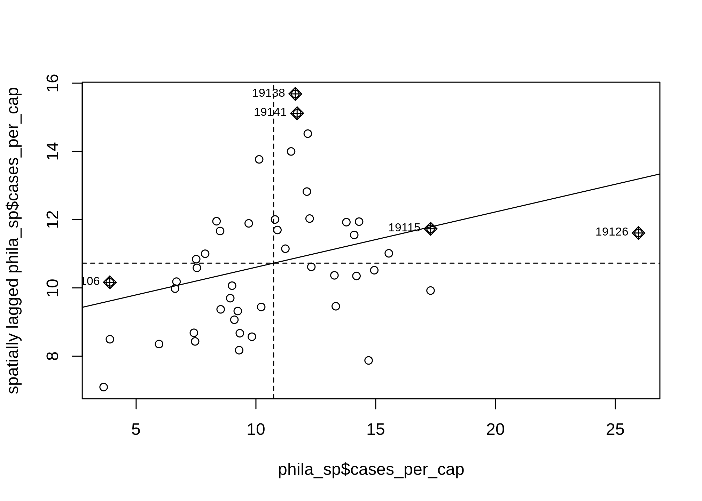
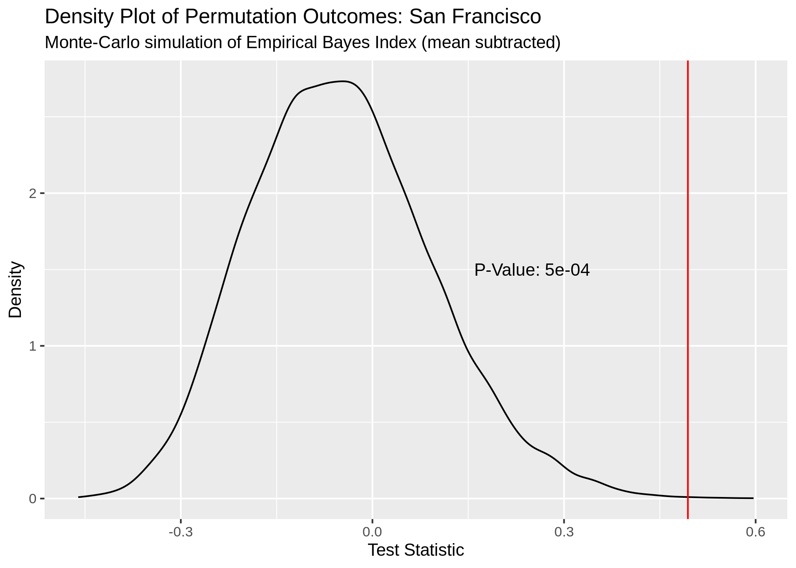
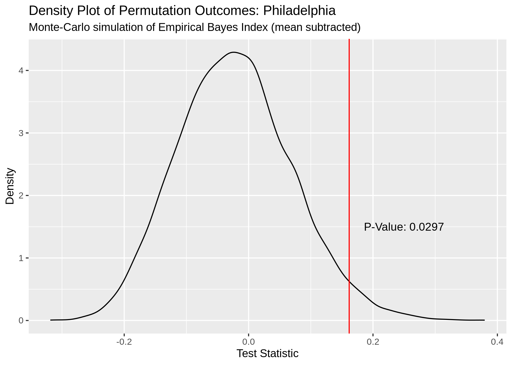

Finding COVID-19 Clusters Using R
COVID-19 data analyses are all the rage at the moment, with COVID datasets being made publicly available at the city, state, and national level. It’s an awesome example of how open data can lead to a better understanding of the world around us. And, the best part is, much of the actual analysis is being done for free! I decided to take a stab it and contribute to the public COVID discorse with my own analysis below.
Talk about COVID-19 “hot spots” is frequent in the news, often referring to NYC since it has the most COVID-19 cases of any city in the US. Beyond looking at simple COVID case tallies, it is not clear how these hot spots are being determined. How do they determine that one area has a statistically significant higher number of cases compared to another? Factors such as population and the COVID rates of locations directly next to an area all affect how significance is determined within COVID case data. Enter Moran’s I, a measure of spatial autocorrelation that can be used to test for clustering, or dispersion, of an outcome on a map. I will show you how to perform and interpret a Moran’s I test by applying it to real COVID data for a selection of US cities.
Data Sources
For each area you want to test for spatial autocorrelation you will need three main pieces of information.
- Total COVID cases
- Estimated population
- Geometry of the area
COVID Cases
The most granular datasets I could find for COVID data has cases tallied at the zipcode level for certain cities and states. Here is an example for the state of Illinois. Unfortunately I did not find a central repository or API that allows you to easily retrieve this data for multiple areas. Instead it appears a city or state will release the data on only their own site, meaning I will need to aggregate the data from multiple sources. For this blog I manually downloaded COVID case data by zipcode for Philadelphia, Chicago, and San Francisco
Population and Geometry
Finding population and case data was easy thanks to the publicly available Census API and the tidycensus R package. The Census API is pretty amazing, with thousands of different statistics available at multiple geographic levels. To make things easier, the tidycensus package is a convenient wrapper for this API that makes pulling data a breeze. Tidycensus can automatically pull the geometry of the area your statistics represent for plotting and analysis. Adding the geometry to the returned data converts it to an sf object that can be easily visualized using ggplot2. Here is all the code you need to create a heatmap of household income in the US by county.
us_county_income <- get_acs(geography = "county", variables = "B19013_001",
shift_geo = TRUE, geometry = TRUE)
ggplot(us_county_income) +
geom_sf(aes(fill = estimate), color = NA) +
coord_sf(datum = NA) +
theme_minimal() +
scale_fill_viridis_c()For our anaylsis I pulled the total population of each zipcode in the US, with its geometry, and did an inner join with my COVID datasets. I end up with a seperate sf object for Philadelpia, San Francisco, and Chicago.
head(phila_covid_sf)## Simple feature collection with 6 features and 4 fields
## geometry type: MULTIPOLYGON
## dimension: XY
## bbox: xmin: 478510.5 ymin: 4419279 xmax: 496536.8 ymax: 4435730
## epsg (SRID): 26918
## proj4string: +proj=utm +zone=18 +ellps=GRS80 +towgs84=0,0,0,0,0,0,0 +units=m +no_defs
## # A tibble: 6 x 5
## cases zip pop geometry cases_per_cap
## <dbl> <fct> <dbl> <MULTIPOLYGON [m]> <dbl>
## 1 403 19138 34614 (((485004.9 4433570, 485294.2 4433486, 4… 11.6
## 2 171 19122 22690 (((486657.7 4426246, 486771.9 4426228, 4… 7.54
## 3 509 19149 59853 (((492066.7 4431838, 492275.7 4432106, 4… 8.50
## 4 627 19124 68905 (((489247.9 4429303, 489557.3 4429251, 4… 9.10
## 5 739 19143 65812 (((478510.5 4422474, 478711.6 4422840, 4… 11.2
## 6 235 19130 26100 (((483562.3 4425076, 483487.3 4425183, 4… 9.00Moran’s I
A Moran’s I test results in a p-value, Moran’s I index, and z-score that can be interpreted as follows:
| Moran’s I Output | Interpretation |
|---|---|
| The p-value is not statistically significant | You cannot reject the null hypothesis. It is quite possible that the spatial distribution of feature values is the result of random spatial processes. The observed spatial pattern of feature values could very well be one of many, many possible version of complete spatial randomness. |
| The p-value is statistically significant, and the z-score/Moran’s I index is positive. | You may reject the null hypothesis. The spatial distribution of high values and/or low values in the dataset is more spatially clustered than would be expected if underlying spatial processes were random. |
| The p-value is statistically significant, and the z-score/Moran’s I index is negative | You may reject the null hypothesis. The spatial distribution of high values and/or low values in the dataset is more spatially dispersed than would be expected if underlying spatial processes were random. A dispersed spatial pattern often reflects some type of competative process- a feature with a high value repels other features of high values; similarly, a feature with low value repels other features with low values. |
Furthermore there is a global and local version of the Moran’s I test. A global Moran’s I test produces one set of test statistics that indicates the level of clustering and dispersion in the data as a whole. A local Moran’s I test will produce a set of test statistics for each area grouping specified in the dataset (in this case zip codes) that tell you whether the measurement feature is statistically higher or lower in that area.
Philadelphia Example
I will start with looking at COVID case numbers in Philadelphia. Combining population and zipcode shapefiles from the Census API with COIVD totals scraped from the city’s data portal allows us to create the following cloropleth.

Based on this graph, would you say there is significant COVID outbreak clusters within Philadelphia? The brightest yellow zipcode certainly looks like a hot spot but is the difference statistically significant? Cloropleth maps such as this are extremely popular, and often showcased by healthcare organizations I work with as examples of their BI capabilities. These visuals look beautiful, but drawing conclusions from them with the naked eye can be difficult or, in some cases, downright deceiving. We can take the guesswork out of interpreting a visual like this with Moran’s I.
Global Moran’s I
We will use the spdep package in R to help perform the Moran’s I test. I prefer working with sf objects in R, which is a newer way to store spatial data-structures that adheres to tidy principals, but in order or take advantage of the robust spatial tests available in spdep we must use sp objects instead. To perform these tests I will convert my sf objects to sp, then tidy the results on the back end using the broom package.
In order to calculate Moran’s I the spdep function needs to know which zipcodes are close to or far away from each other. Feeding an sp object to the poly2nb() function will build a neighbors list based on regions sharing the same boundary. Below visually shows the relationships this function is producing.
library(spdep)
## convert philly sf object to sp
phila_sp <- as(phila_covid_sf, "Spatial")
## Create list of neighbors
phila_nb <- poly2nb(phila_sp, queen = T, row.names = phila_sp$zip)
coords <- coordinates(phila_sp)
##Visualize neighbor relationships
plot(phila_sp)
plot(phila_nb, coords = coords, add = T, col = "#F78764")
We are now ready to perform the Moran’s I test for spatial autocorrelation. I utilize the EBImoran.mc() function since we are working about COVID rates based on the population of a specific zipcode. This function also automatically performs Monte Carlo simulations for us to compare our observed test statistic against. We are required to add the number of COVID cases and population for a zipcode, as well ad a listw object which a weighted list representing the neighborhood relationships we calculated earlier.
## EBI Morans I
set.seed(1988)
phila_moran_mc <- EBImoran.mc(n = phila_sp$cases,
x = phila_sp$pop,
## convert neighbors list to a listw object
listw = nb2listw(phila_nb, style = "W"),
nsim = 9999)The tidied output of our test shows a significant p-value of .0289 and positive Moran’s I test statistic of .162. This indicates that there is significant clustering of COVID cases in Philadelphia based on the COVID data we have. A density plot of the Monte Carlo permutation outcomes futher demonstrates how likely our observed test statistic is.
## # A tibble: 1 x 5
## statistic p.value parameter method alternative
## <dbl> <dbl> <dbl> <chr> <chr>
## 1 0.162 0.0289 9711 Monte-Carlo simulation of Empiri… greater
Local Moran’s I
Now that we know there is COVID clustering in Philadelphia, lets run a Local Moran’s I test to further investigate. The local version of this test operates much the same as our previous example, except more work is needed to tidy the output since we are generating a greater number of test statistics. There is no “EBI” version of the Local Moran’s test so I fed the COVID per capita rates directly to the localmoran() function.
phila_lc_moran <- localmoran(phila_sp$cases_per_cap,
## listw object of neighbors list
listw = nb2listw(phila_nb, style = "W"),
p.adjust.method = "bonferroni",
alternative = "two.sided")
phila_lc_moran_tidy <- broom::tidy(phila_lc_moran) %>%
rename(p_value = 6 ,zip = .rownames, morans_i = 2, z_score = 5) %>%
select(zip, morans_i, z_score, p_value) %>%
mutate(morans_i = round(morans_i,3),
z_score = round(z_score,3),
p_value = round(p_value,3),
lag_cases_per_cap = round(lag.listw(var = phila_sp$cases_per_cap, x = nb2listw(phila_nb, style = "W")),3),
lag_mean = round(mean(lag.listw(var = phila_sp$cases_per_cap, x = nb2listw(phila_nb, style = "W"))),3)
)First 6 results from our Local Moran’s test
head(phila_lc_moran_tidy)## # A tibble: 6 x 6
## zip morans_i z_score p_value lag_cases_per_cap lag_mean
## <chr> <dbl> <dbl> <dbl> <dbl> <dbl>
## 1 19127 1.63 2.51 0.037 7.10 10.7
## 2 19137 0.969 1.86 0.254 8.50 10.7
## 3 19147 0.72 2.03 0.296 8.36 10.7
## 4 19123 -0.717 -2.08 0.303 7.88 10.7
## 5 19126 0.838 1.61 0.429 11.6 10.7
## 6 19138 0.282 0.752 1 15.7 10.7There is a built in moran.plot function in spdep to visualize how our zipcodes compare to each other. This plots a zipcode’s COVID cases per capita against the weighted per capita rates of the zipcodes around it. The zipcodes that are highlighted are those that deviate the most from other zipcodes in terms of COVID rates.

When tidying our test output I calculated the spatially lagged cases per capita (aka weighted cases per capita of neighboring zipcodes) for each zipcode and the mean spatially lagged cases per capita of all zipcodes. We can use these values to determine if a zipcode falls within one of the below categories:
- Low-Low - The area has a low number of cases and is surrounded by other areas with low case totals.
- Low-High - The area has a low number of cases and is surrounded by other areas with high case totals.
- High-Low - The area has a high number of cases and is surrounded by other areas with low case totals.
- High-High - The are has a high number of cases and is surrounded by other areas with high case totals.
Here is my visualization staging code that combined the Local Moran’s I results to the Philadelphia sf object and calculates which category a zipcode falls into.
phila_morans_stage <- phila_covid_sf %>%
inner_join(phila_lc_moran_tidy, by = c("zip"="zip")) %>%
mutate(quad = case_when(
cases_per_cap < lag_mean & lag_cases_per_cap < lag_mean ~ "Low-Low",
cases_per_cap < lag_mean & lag_cases_per_cap >= lag_mean ~ "Low-High",
cases_per_cap >= lag_mean & lag_cases_per_cap < lag_mean ~ "High-Low",
cases_per_cap >= lag_mean & lag_cases_per_cap >= lag_mean ~ "High-High"
))The below graph shows Philadelphia and the zipcodes with a significant result from Local Moran’s I. I used a high p-value to demonstrate how a visualization would look utilizing the different color coded categories we discussed. This allows us to quickly see the zipcodes with significant p-values and how they compare to their neighbors.
Functional Programming For Many Locations
If you can run an analysis once, then you can create functions and utilize purrr to run it many times. I decided to pull data from 3 different cities, Chicago, Philadelphia, and San Francisco, and run the same analysis above on all of them. My code for automating this process for many different locations can be found at the bottom.
Here are the popular cloropleth graphs for each location showing the COVID cases per capita of zipcodes. Which city has the most clustering of COVID cases? Let’s find out!


Our Global Moran’s I test results show all cities have significant clustering of COVID cases. Chicago takes the crown as having the most statistically significant clustering with San Francisco being a close second.
## # A tibble: 3 x 6
## city statistic p.value parameter method alternative
## <chr> <dbl> <dbl> <dbl> <chr> <chr>
## 1 San Fra… 0.494 0.0005 9995 Monte-Carlo simulation … greater
## 2 Philade… 0.162 0.0297 9703 Monte-Carlo simulation … greater
## 3 Chicago 0.473 0.0001 10000 Monte-Carlo simulation … greater
Our Local Moran plots show that San Francisco’s clustering mostly consists of high COVID density areas surrounding each other on the East side of the city. Philadelphia’s only significant clustering is a zipcode with an unusually low number of cases on the West side of the city. Chicago is the tale of two cities, with the lakefront downtown area having a significant clustering of low COVID zipcodes and the West side seeing high clustered zipcodes.


Caveats and Considerations
Moran’s I is a great way to statistically prove clustering or dispersion of a spatial features that the naked eye might not find. However, there are major caveats and considerations when performing such a test. In the COVID case, the number of tests being performed in each zipcode obviously will have an affect on outcomes. In a perfect analysis we would have appropriate sampling from each zipcode to help validate our results. Also, the areas that you wish to compare will affect outcomes. Zipcodes are not standard shapes or sizes that perfectly divide a city based on population. Both of these factors need to be taken into consideration when performing and interpreting a Moran’s I test.
Funcational Code
##Functional Programming version
sf_plot <- function(data, loc) {
data %>%
ggplot() +
geom_sf(aes(fill = cases_per_cap)) +
scale_fill_gradient(low = "#FFF5F0" , high = "#A50F15", name = "Cases Per 1000") +
labs(title = paste0(loc," COVID-19 Cases by Zipcode"))
}
#function to create global moran density plots
global_morans_plot <- function(data, loc){
tibble::enframe(data$res) %>%
ggplot(aes(x = value)) +
geom_line(stat = "density") +
geom_vline(xintercept = data$statistic, col = "red") +
annotate(geom = "text",x = .25, y = 1.5, label = paste0("P-Value: ",data$p.value)) +
labs(title = paste0("Density Plot of Permutation Outcomes: ",loc),
subtitle = "Monte-Carlo simulation of Empirical Bayes Index (mean subtracted)",
x = "Test Statistic",
y = "Density")
}
#function to create tidy local morans tibble
local_morans_tidy <- function(lm, sp, sf){
broom::tidy(lm) %>%
rename(p_value = 6 ,zip = .rownames, morans_i = 2, z_score = 5) %>%
inner_join(sf, by = c("zip"="zip")) %>%
mutate(lag_cases_per_cap = spdep::lag.listw(var = sp$cases_per_cap, x = spdep::nb2listw(spdep::poly2nb(sp,queen = T))),
lag_mean = mean(lag_cases_per_cap),
quad = case_when(
cases_per_cap < lag_mean & lag_cases_per_cap < lag_mean ~ "Low-Low",
cases_per_cap < lag_mean & lag_cases_per_cap >= lag_mean ~ "Low-High",
cases_per_cap >= lag_mean & lag_cases_per_cap < lag_mean ~ "High-Low",
cases_per_cap >= lag_mean & lag_cases_per_cap >= lag_mean ~ "High-High"
))
}
## Function to create local morans plots
local_morans_plots <- function(lm_tidied, loc){
ggplot() +
geom_sf(data = sf::st_as_sf(lm_tidied)) +
geom_sf(data = sf::st_as_sf(lm_tidied) %>% filter(p_value <= .1), aes(fill = quad)) +
scale_fill_manual(values = c("Low-Low"="#4DAF4A" ,"Low-High"="#377EB8","High-Low"="#FF7F00","High-High"="#E41A1C")) +
labs(title = paste0(loc," Significant COVID-19 Clustering"), x = "", y = "", fill = "")
}
#sombine sf objects into a tibble with nested lists
covid_tibble <- tibble(
location = c("San Francisco", "Philadelphia","Chicago"),
covid_sf = list(sf_covid_sf,
phila_covid_sf,
chi_covid_sf)
)
morans_results <- covid_tibble %>%
##perform global morans I calculation with MC simulations
mutate(
covid_map = map2(covid_sf,location,sf_plot),
covid_sp = map(covid_sf, ~as(., "Spatial")), ##create sp object
global_morans = map(covid_sp, ~ spdep::EBImoran.mc(n = .$cases,
x = .$pop,
listw = spdep::nb2listw(spdep::poly2nb(.,queen = T, row.names = .$zip)),
nsim = 9999)), ##run global morans I test
global_morans_tidied = map(global_morans, broom::tidy), ##Create output plots
global_moran_plots = map2(global_morans,location,global_morans_plot)) %>% #perform local morans I calculations
##Perform local morans I calculations
mutate(
local_morans = map(covid_sp, ~ spdep::localmoran(x = .$cases_per_cap,
listw = spdep::nb2listw(spdep::poly2nb(.,queen = T, row.names = .$zip)),
p.adjust.method = "bonferroni")), ##run local morans I
local_morans_tidied = pmap(list(local_morans, covid_sp, covid_sf), local_morans_tidy), ##tidy the local morans I output
local_morans_plots = map2(local_morans_tidied,location,local_morans_plots) ##Create output plots
)Dennis Sobolewski
Data Scientist
My research interests include distributed robotics, mobile computing and programmable matter.